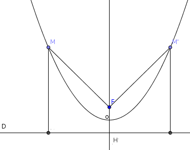

| Choisissez votre langue ! | Choose your language ! |
Montrer qu'une parabole au sens historique est une courbe non bornée possèdant un unique axe de symétrie.
aide
Soit F un point et D une droite telle que la courbe soit le lieu des points équidistants de F et D.
Ecrire une équation de la parabole dans un repère où l'axe des adscisses est parallèle à D et où l'origine est le milieu du segment [FH] où H est la projection orthogonale de F sur D.
solution

Soit donc H la projection orthogonale de F sur D et O le milieu de [FH].
Soit p la distance FH c'est à dire la distance de F à D.
Soit
\( \displaystyle \overrightarrow{i} \)
un vecteur unitaire directeur de D et soit
\( \displaystyle \overrightarrow{j} \)
un vecteur unitaire orthogonal à
\( \displaystyle \overrightarrow{i} \)
et de même sens que
\( \displaystyle \overrightarrow{HF} \)
.
F a alors pour coordonnées (0,p/2) et l'équation de D est y=-p/2.
Un point M(x,y) appartient à la parabole si et seulement si MF=d(M,D).
Analytiquement cela se traduit par :
x2+(y-p/2)2=(y+p/2)2
En développant et en simplifiant il vient l'équation de la parabole dans le repère choisi :
x2=2py
Ce qui prouve que l'axe des ordonnées du repère est un axe de symétrie et que la courbe est non bornée puisque comportant des points d'abscisses arbitrairement grandes.
La courbe présente en outre une dans la direction de l'axe Oy pour x → ∞ et x → -∞ . Il ne peut y avoir d'autre axe de symétrie parallèle au premier car alors la courbe serait globalement invariante par une translation de vecteur // à x'Ox, ce qui est impossible compte tenu de son équation.
Il ne peut pas y avoir non plus d'autre axe de symétrie non parallèle au premier car alors la courbe serait globalement invariante par une rotation ayant pour axe l'intersection des deux axes, et elle présenterait une branche parabolique dans la direction du nouvel axe, ce qui est également impossible.
Show that a parabola in the historical sense is an unbounded curve with a single axis of symmetry.
hint
Let F be a point and D a line such that the curve is the locus of points equidistant from F and D.
Write an equation of the parabola in a frame where the adcissa axis is parallel to D and where the origin is the middle of the segment [FH] where H is the orthogonal projection of F on D.
solution
Let H be the orthogonal projection of F onto D and O the midpoint of [FH].
Let p be the distance FH, i.e. the distance from F to D.
Let
\( \displaystyle \overrightarrow{i} \)
a unit direction vector of D and let
\( \displaystyle \overrightarrow{j} \)
a unit vector orthogonal to
\( \displaystyle \overrightarrow{i} \)
and of the same meaning as
\( \displaystyle \overrightarrow{HF} \)
.
F then has coordinates (0,p/2) and the equation of D is y=-p/2.
A point M(x,y) belongs to the parabola if and only if MF=d(M,D).
Analytically this translates to:
x2+(y-p/2)2=(y+p/2)2
By expanding and simplifying it comes the equation of the parabola in the chosen reference:
x2=2py
This proves that the ordinate axis of the coordinate system is an axis of symmetry and that the curve is unbounded since it includes arbitrarily large abscissa points.
The curve also has a in the direction of the Oy axis for x → ∞ and x → -∞ . There can be no other axis of symmetry parallel to the first because then the curve would be globally invariant by a vector translation // at x'Ox, which is impossible given its equation.
Nor can there be another axis of symmetry not parallel to the first because then the curve would be globally invariant by a rotation having as its axis the intersection of the two axes, and it would present a parabolic branch in the direction of the new axis , which is also impossible.
|
Création Gilles Dubois
Created by Gilles Dubois
|
Janvier 2022
January 2022
|
Version mobile Jquery
Mobile Jquery version
|
|